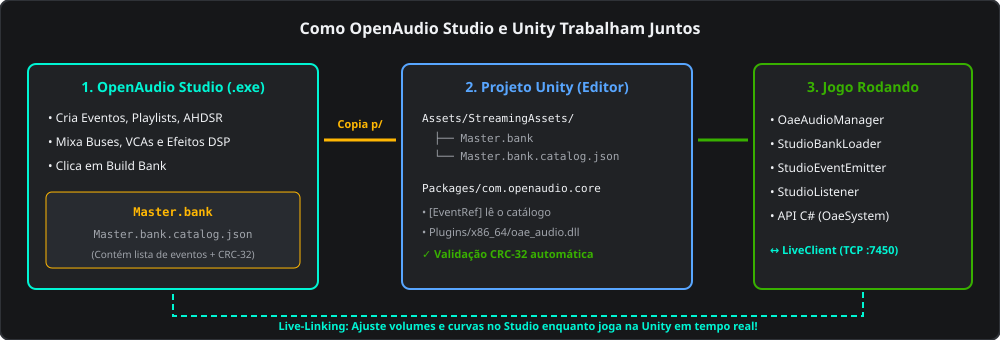

Capítulo 8 — Como OpenAudio Studio e Unity Trabalham Juntos
Entenda a divisão de responsabilidades entre os dois programas, como instalar o pacote
com.openaudio.core na Unity e onde colocar seus arquivos .bank.
O OpenAudio Studio é a sua bancada de criação sonora (onde você monta eventos, efeitos e mixagem). A Unity é o motor do jogo (onde personagens andam, colidem e mudam de fase).
A grande vantagem é que a Unity usa exatamente a mesma engine nativa (oae_audio.dll) que toca o som no Studio.
O jogo usa o banco publicado e aplica os parâmetros, os gatilhos e o posicionamento da cena em execução.

.bank + .bank.catalog.json na pasta StreamingAssets da Unity.
1. Passo a Passo de Instalação na Unity
-
Adicionar o pacote UPM (
com.openaudio.core): Na Unity, abra Window → Package Manager → + → Add package from disk... e selecione o arquivounity/com.openaudio.core/package.json. -
Garantir a DLL nativa (
oae_audio.dll): Execute o scriptscripts/deploy_unity.ps1(ou copieoae_audio.dllparaPlugins/x86_64/dentro do pacote para Windows x64). -
Copiar os Bancos Publicados:
Coloque o
ExampleGameProject.banke oExampleGameProject.bank.catalog.jsongerados pelo Build Bank dentro deAssets/StreamingAssets/no seu projeto Unity.
2. O que o banco e o catálogo fazem
O .bank contém o áudio e as regras publicadas. O .bank.catalog.json permite ao Editor encontrar os caminhos disponíveis no seletor [EventRef]. O seletor verifica tamanho e CRC-32 do banco correspondente. Se ele indicar inconsistência, copie novamente os dois arquivos da mesma compilação.
3. Faça o primeiro teste

- Publique o projeto do exemplo do capítulo 2. Copie
ExampleGameProject.banke o catálogo paraAssets/StreamingAssets/. - Em uma cena de teste, adicione os componentes de gerência (
OpenAudioManager), carga (StudioBankLoader) e emissão espacial (StudioEventEmitter) junto aoStudioListenerna câmera conforme o capítulo 9. Useevent:/sfx/coinpara ouvir a moeda ao entrar em Play Mode. - Confira o Console se faltar som.
DllNotFoundExceptionaponta para a instalação do plug-in nativo.Bank file not foundpede que você revise a pasta e o nome do banco. Se o evento estiver ausente, confira o caminho e a versão publicada.
Confirme qual versão o jogo está tocando
- Escolha uma mudança fácil de identificar, como reduzir a moeda de
0 dBpara-12 dB. Ouça no Studio e anote o caminho do evento. - Publique e copie o par de arquivos para
Assets/StreamingAssets/. Confira o nome em Bank Files. Faça a troca fora do Play Mode e inicie uma nova sessão para carregar a versão. - Dispare o mesmo Event Path. Se soar como antes, confira a pasta do projeto Unity, o nome do banco, o caminho e os ajustes de ganho no jogo. Se o seletor estiver vazio, confira o catálogo e tente digitar o caminho completo.
Este fluxo usa Windows x64. Antes do primeiro Play, confira se OpenAudio Engine Core aparece em Packages e se oae_audio.dll está em Plugins/x86_64/ dentro do pacote.
Termos da integração
- UPM
- Unity Package Manager, responsável por importar e resolver dependências do pacote.
- StreamingAssets
- Pasta que leva os arquivos do banco ao jogo. O nome da pasta descreve a distribuição dos arquivos. O loader lê o banco como uma unidade.
- CRC-32
- Valor calculado a partir dos bytes do arquivo, usado para detectar divergência entre banco e catálogo.
- Play Mode
- Execução da cena dentro do Editor para testar o jogo.